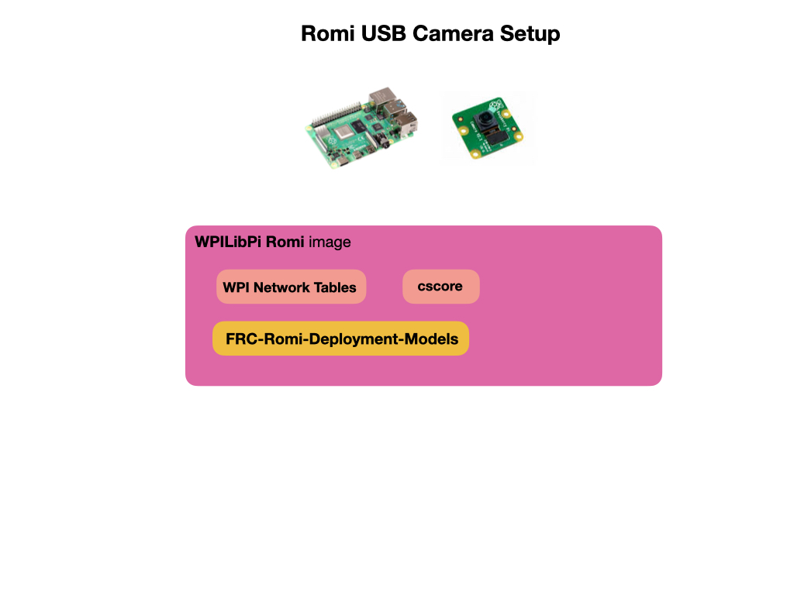

USB Camera Deployment for Raspberry Pi
This section shows you how to deploy object detection models onto the Raspberry Pi using a USB camera. The Pi must be pre-installed with the WPILibPi image. We’ll show two methods for running object detection. You can use the OpenCV Deep Neural Networks Module (DNN module), or you can deploy using a Tensorflow Lite model file. In both cases you’ll need to have a TPU accelerator, such as the Coral USB Accelerator, connected to the Pi in order to run inference at an exceptable speed for competition. However, you can still test without an accelerator.

Installing the FRC Detection Package
To facilitate the deployment the package FRC-Romi-Detection-Models can be used. This package contains the python inference scripts and example model files that detect the Rapid-React balls from the 2022 competition. It also contains the runCamera script to start inference via the Romi Web UI.
To install the detection package:
cd ${HOME}
git clone https://github.com/FRC-2928/FRC-Romi-Deployment-Models.git
Install the addition python requirements for the FRC scripts. The requirements are Pillow, argparse, and tflite-support.
cd ${HOME}/FRC-Romi-Deployment-Models
python3 -m pip install -r requirements.txt
Run Inference using OpenCV DNN
The OpenCV DNN module uses the .weights file that’s generated from the training process. There’s no need to convert this file to another format, such as a tflite file. You’ll also need the configuration .cfg and the class labels .names file that you used for training. All three of these files should have been saved from the training process. Examples of these files are included in the FRC-Romi-Detection-Models package.
To run the script for the OpenCV DNN module:
python3 dnn_yolo_wpi.py --model rapid-react
where the –model parameter is used to pass in the file path and name of your model files. See The Inference Script Explained in this document for more information on the script used for inference.
Deploy using a TFLite Model File
Use the Colab Notebook to convert a YOLOv4 .pb file to a .tflite file. You’ll need to upload the weights file that you created during the training process to your Google Drive.